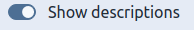
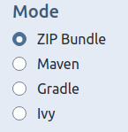
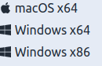
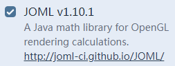

配置环境
下载 LWJGL
LWJGL提供了一个在线配置库的网址
当然，这么多配置选项，不给点建议你肯定会懵圈
首先是 Show description 开关，对，就是这个

这个开关用于负责解释这些奇奇怪怪的选项是什么意思
如果英文足够好，可以选择开这个开关然后根据内容自己选
难度约等于初三英语考试
然后是 Mode 选项

第一个是以压缩文件形式打包下载
第二个是用Maven来自动下载依赖
第三个是用Gradle来自动下载依赖
第三个是用Apache Ivy来自动下载依赖
Option选项因Mode而异
不过想必大家都能看懂
接下来是Natives选项
因为关于图形渲染的库必定与平台有关
所以要你选择你的游戏可能会发布到的平台
一般而言，勾选这三个就可以了

如果你想，可以全选
之后是 Presets 选项
选择 Custom
现在是Addons选项
一定要选择JOML

数学库（到后面数学是真的重要）
Version 选择 3.2.3
最后是Contents
我一般选择
- Assimp
- glfw
- LLVM
- LZ4 或 ZStandard
- OpenAL
- OpenGL
- STB
- Vulkan
- Vulkan Memory Allocator
其中强烈推荐（几乎必不可少）
- glfw
- OpenAL (音效)
- OpenGL
- STB (纹理等)
配置环境
在 Mode 中选择 压缩文件 的根据自己的IDE配置
剩下的则把对应的文件（如build.gradle）复制到项目根目录下